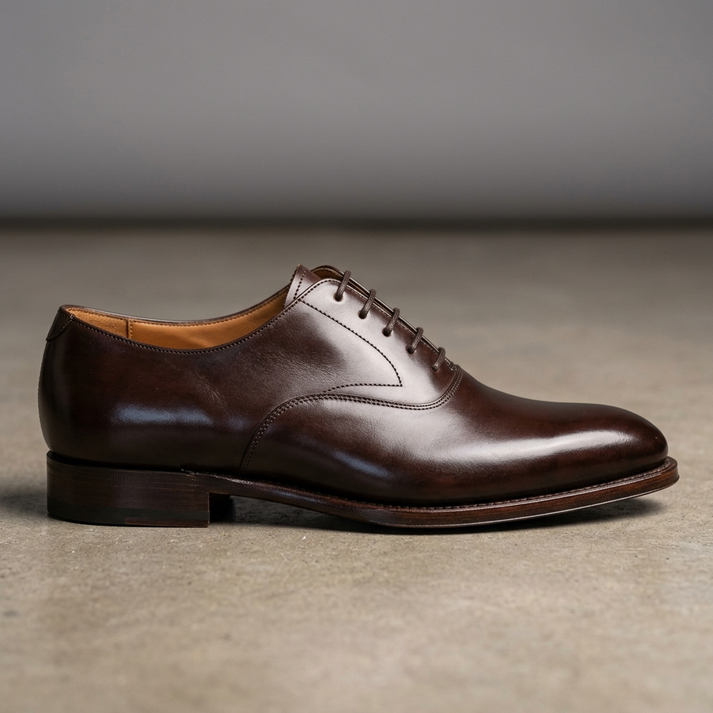
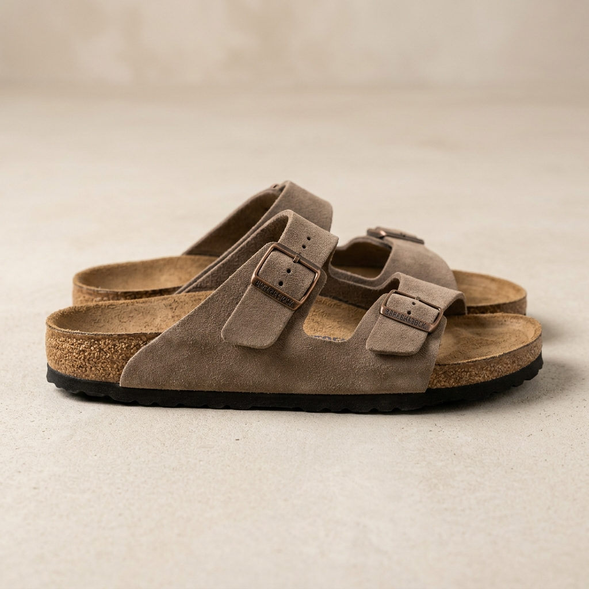
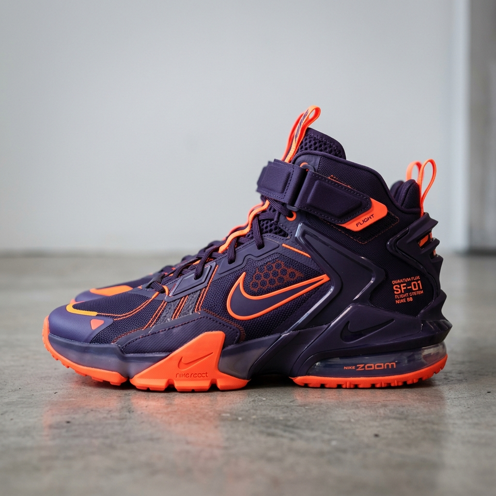
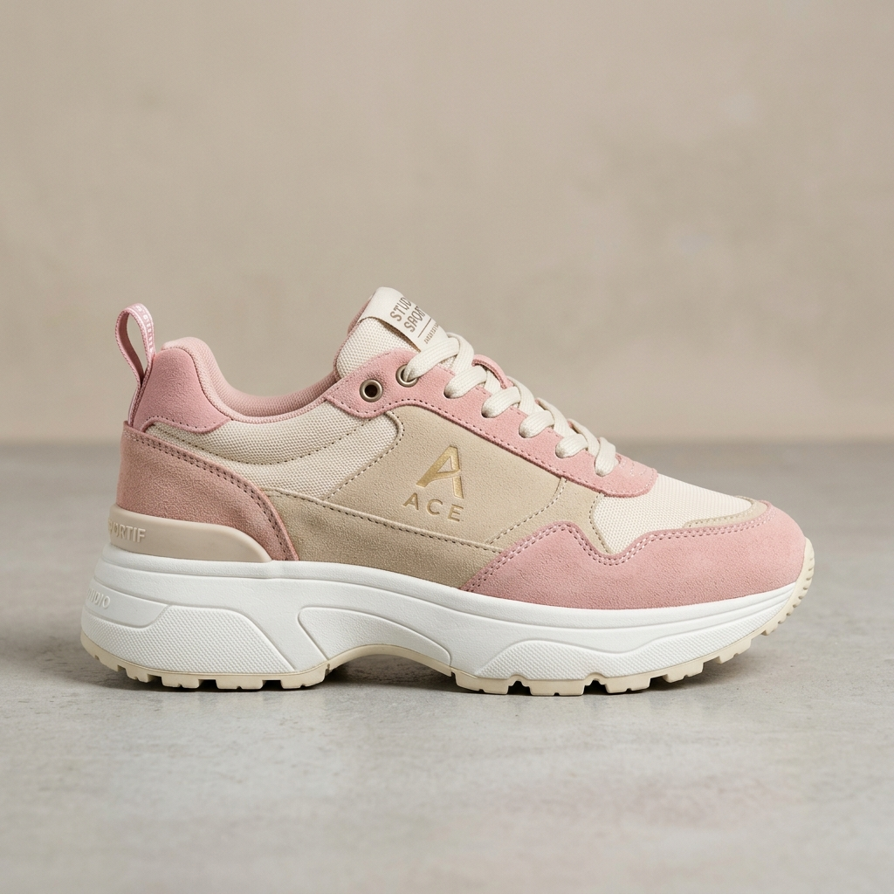
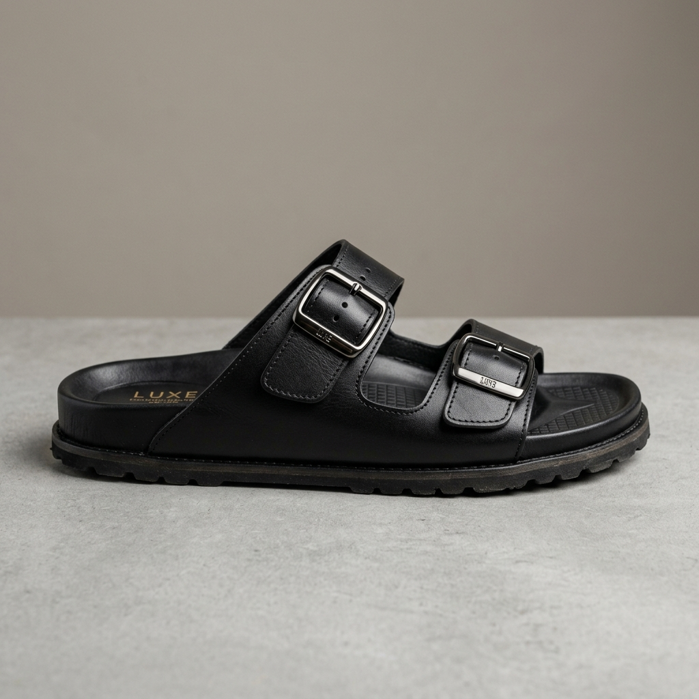

極致工藝，
步履非凡
探索 AURA 2026 全新跨界力作。我們融合前衛美學設計與高能避震氮氣科技，重新定義您的行走與奔跑體驗。

熱銷新品
Apex 飛織慢跑鞋
探索 AURA 2026 全新跨界力作。我們融合前衛美學設計與高能避震氮氣科技，重新定義您的行走與奔跑體驗。
選對一雙【鞋子】，不只是好看，更要符合生活、運動與穿搭需求。無論你正在找【男】款日常鞋、【女】款運動鞋，還是參考【ptt】、【dcard】上的熱門討論，我們都能依照不同情境，幫你找到真正適合自己的【推薦】款式。
如果你熱愛球場表現，可以從支撐性佳、抓地力穩定的【籃球鞋】開始挑選；若是剛開始跑步的【新手】，則建議選擇緩震舒適、包覆性好的【慢跑鞋】，讓每一次訓練都更安心。平常有重訓、健身習慣的人，也可以選擇適合【健身】使用的【訓練鞋】，尤其女性在深蹲、硬舉 or 有氧課程中，更需要穩定又輕便的鞋款。
日常穿搭方面，【休閒鞋】一直是最百搭的選擇，不論是【男】生簡約風，或是【女】生日常通勤，都能輕鬆搭配。
想要乾淨俐落的造型，可以選擇經典【白鞋】；若偏好低調耐看，【黑鞋】也很適合上班、上課 or 外出穿著。想偷偷修飾比例的話，【增高鞋】也是不少【男】生會考慮的實用選項。
如果你重視整體造型感，也可以挑選適合兩人一起穿的【情侶鞋】，讓日常穿搭更有默契；喜歡修飾腿型的人，則可以嘗試近年很受歡迎的【厚底鞋】，兼具流行感與舒適度。家中有小朋友的話，挑選【兒童】【運動鞋】時，則要特別注意止滑、輕量與足部保護。
💡 鞋款保養小秘訣：
除了鞋款本身，保養也很重要。日常穿鞋後，可搭配【除臭】用品維持鞋內清爽；雨季或戶外活動前，也建議使用【防水噴霧】，延長鞋面壽命。
面對眾多【品牌】與款式，只要依照用途、腳型與穿搭風格挑選，就能找到真正適合你的理想鞋款。讓對的鞋子，陪你舒適自信地走過生活中的每一個精彩瞬間！
尋找最適合您的生活與步調，AURA 經典系列引領品味人生





AURA 熱銷排行，體驗最受歡迎的先鋒機能與頂級美學設計
採用最新飛織高彈力鞋面，結合超輕量避震大底，為您的雙足提供極致的包覆性與彈性支撐，不論是長距離慢跑或日常通勤皆能輕鬆駕馭。
經典德比與雕花 Oxford 翼紋設計，深邃復古棕色牛皮展現匠人手工擦色質感，是正式商務與隆重場合的精緻尊榮之選。

雙寬帶精緻牛皮鞋面，配備可調節防鏽金屬搭扣，結合符合人體工學的貼合中底，完美兼顧夏日隨興與質感生活。
馬卡龍粉與奶油色麂皮層次拼接，搭載老爹鞋標誌性的加厚鬆糕底，視覺增高 5 公分，完美結合了街頭休閒感與復古少女情懷。